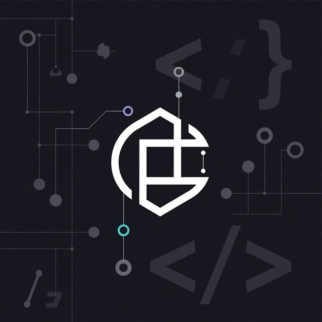
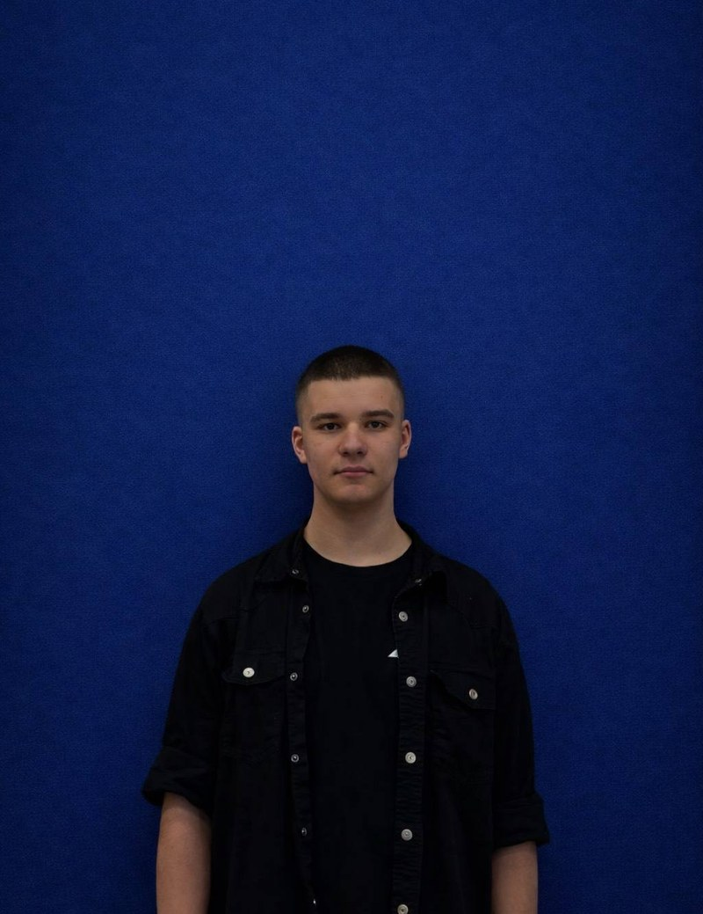
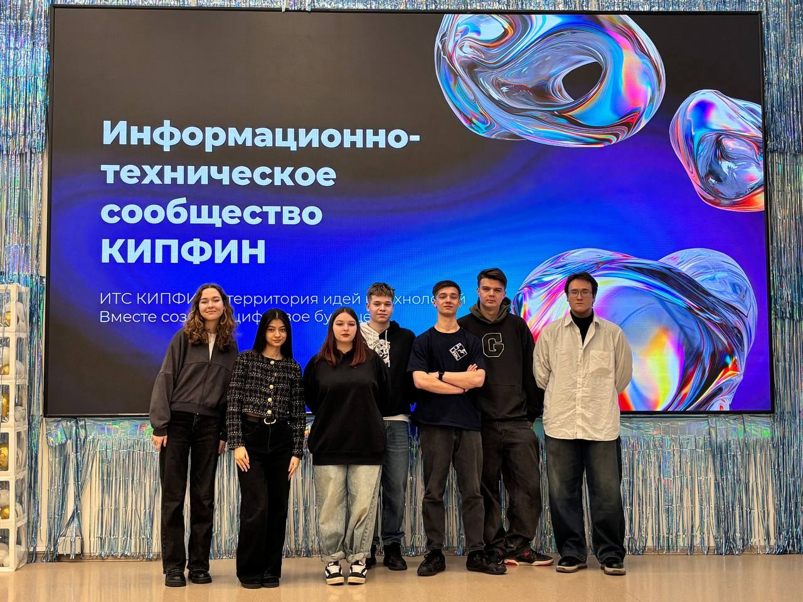
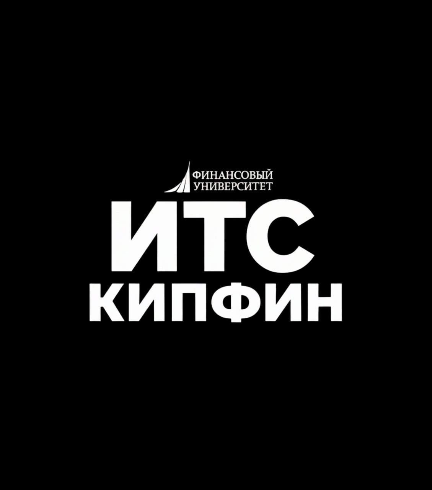

// Команда разработчиков · КИПФИН
Разрабатываем современные цифровые продукты — от электронных журналов до образовательных платформ
Codion — студенческая команда разработчиков из Колледжа информационных технологий и программирования Финансового университета. Мы создаём реальные цифровые продукты, которые решают задачи студентов и преподавателей.
Мы — группа студентов, которые не ограничиваются учебной программой. Под руководством Жукова Савелия команда Codion разрабатывает продукты, которые уже используются в стенах КИПФИНа.
Наш стек охватывает веб-разработку, мобильные приложения, базы данных и облачные технологии. Каждый участник — специалист в своей области, но мы работаем как единый механизм.
Помимо разработки, мы активно участвуем в жизни ИТС КИПФИН — информационно-технического сообщества Финансового университета.
Наши продукты решают реальные задачи: от цифровизации учебного процесса до создания образовательных экосистем.
// Веб-приложение · В разработке
Электронный журнал и система управления учебным расписанием для студентов и преподавателей КИПФИНа. Замена бумажного документооборота на удобный цифровой формат с уведомлениями и аналитикой.
// Образовательная платформа · Активно
Образовательная платформа для дистанционного обучения и мониторинга успеваемости. Включает систему тестирования, личные кабинеты студентов и преподавателей, а также аналитический дашборд.
// Утилита · Завершён
Описание третьего проекта команды. Укажите задачу, которую решает этот продукт, технологии и результат разработки. Отредактируйте этот текст.
// API · В планах
Здесь будет ваш следующий проект. Добавьте описание через приложение insert.py или отредактируйте HTML-код напрямую в этом блоке.
Четыре разработчика с разными специализациями — один общий вектор.
// Team Lead · Председатель ИТС
Руководитель команды Codion и председатель ИТС КИПФИН. Студент группы 2ИСИП-724. Координирует разработку всех проектов команды, задаёт архитектурные решения и обеспечивает связь между разработкой и учебным заведением. Увлекается системным программированием и DevOps-практиками.

// Head Developer
Ведущий разработчик команды. Отвечает за backend-архитектуру и техническую реализацию ключевых модулей. Специалист по базам данных и серверным технологиям. Отредактируйте этот текст.
// Frontend Developer
Frontend-разработчик команды. Создаёт пользовательские интерфейсы и обеспечивает UX/UI дизайн всех продуктов Codion. Замените это описание реальными данными через insert.py.
// Mobile Developer
Разработчик мобильных приложений. Специализируется на кроссплатформенной разработке и интеграции с backend-сервисами команды. Замените это описание реальными данными.


Информационно-техническое сообщество КИПФИНа — это объединение студентов, увлечённых технологиями и разработкой. ИТС — территория идей и технологий, где вместе создаётся цифровое будущее.
Все участники команды Codion являются членами ИТС КИПФИН. Мы участвуем в хакатонах, конференциях, мастер-классах и совместных проектах сообщества. Codion — один из флагманских проектов ИТС.
ИТС открыто для всех студентов КИПФИНа, кто хочет развиваться в IT, создавать реальные проекты и быть частью профессионального сообщества.
Актуальная информация о проектах команды, достижениях и мероприятиях. Новые записи добавляются через приложение insert.py.
// 2024 · Основание команды
В 2024 году группа студентов КИПФИНа под руководством Жукова Савелия основала команду разработчиков Codion. Первым проектом стал KipCalendar.
// 2025 · Запуск платформы
Команда приступила к разработке образовательной платформы «Успех Онлайн». Добавьте актуальную информацию о ходе разработки через insert.py.